ECG Blog #94 (Basic Concepts-7) – Thay đổi QRST

--------------------------------
Đây là phần thứ 7 trong loạt bài Basic ECG Concepts. Thay vì các ca cụ thể — mục tiêu của các bài Basic ECG Concepts này là ôn tập ngắn gọn một số chủ đề ít nâng cao hơn, vốn là nền tảng của việc đọc điện tâm đồ. Tài liệu này được trích (có chỉnh sửa) từ cuốn sách nhập môn mới của tôi về đọc điện tâm đồ = “A 1st Book on ECGs-2014” và/hoặc phiên bản 1st-ECG-Book-ePub mở rộng. Rất HOAN NGHÊNH phản hồi của bạn về loạt bài này!
--------------------------------
LƯU Ý: Để tăng tính thiết thực — một số điểm nâng cao đã được bổ sung nhằm minh họa ứng dụng lâm sàng (phần nội dung nâng cao hơn này được trích từ cuốn ECG-2014-ePub của chúng tôi). Nhờ vậy — chúng tôi hy vọng bài viết này thú vị và hữu ích với người đọc điện tâm đồ ở mọi trình độ.
--------------------------------
LIÊN KẾT tới các bài Basic ECG Concepts trước đây:
- Basic Concepts #1 — Thuật ngữ QRS
- Basic Concepts #2 — Các khoảng (PR/QRS/QT )
- Basic Concepts #3 — Trục
- Basic Concepts #4 — Các nhóm chuyển đạo
- Basic Concepts #5 — LVH
- Basic Concepts #6 — Cách tiếp cận hệ thống
- Basic Concepts #7 (chính bài này! ) — Thay đổi QRST
--------------------------------

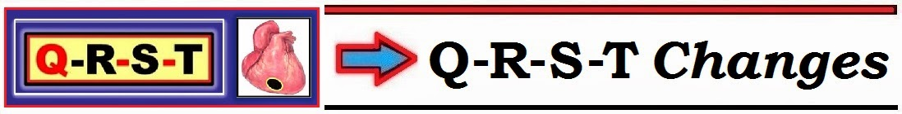
--------------------------------
Sau khi đã trình bày Cách tiếp cận Hệ thống từng bước một của chúng tôi trong Basic ECG Concepts #6 — giờ đây chúng tôi tập trung vào Thông số thứ 6 quan trọng trong bước Phân tích mô tả = đánh giá Thay đổi Q-R-S-T. Theo nhiều nghĩa, việc đánh giá Thông số này thể hiện tinh túy của việc đọc điện tâm đồ trên lâm sàng — ở chỗ nó cung cấp thông tin về khả năng có thiếu máu cục bộ/nhồi máu cấp (so với sự hiện diện của các tình trạng khác gây thay đổi sóng ST-T). Nó cũng có thể giúp nhận biết sự hiện diện và mức độ nặng của các rối loạn chuyển hóa.
- Lý do chúng tôi trì hoãn việc đánh giá Thay đổi Q-R-S-T cho tới cuối Cách tiếp cận hệ thống (tức là cho tới sau khi đã đánh giá Tần số, Nhịp, các Khoảng, Trục và Lớn các buồng tim — như trong Hình 1) — là vì tiêu chuẩn chẩn đoán thiếu máu cục bộ/nhồi máu sẽ khác đi NẾU khoảng QRS kéo dài và/hoặc bệnh nhân có blốc nhánh. Cách chúng ta diễn giải thay đổi sóng ST-T cũng có thể bị ảnh hưởng bởi tần số và nhịp, cũng như việc có hay không có LVH hoặc RVH.
CẢNH BÁO: Mục đích của chúng tôi khi dùng “Q-R-S-T” như một công cụ ghi nhớ — là để không bỏ sót điều gì trong quá trình đánh giá có hệ thống.
- Đặc điểm hay bị bỏ qua nhất — là sự hiện diện của sóng R ưu thế ở chuyển đạo V1 và/hoặc vùng chuyển tiếp sớm hoặc sự hiện diện của phức bộ rsr’ ở chuyển đạo V1. Việc thường quy đưa “Q-R-S-T” vào đánh giá sẽ tự động nhắc bạn chủ động đánh giá thành phần “R” = tính bình thường của sự tiến triển sóng ở các chuyển đạo trước tim.

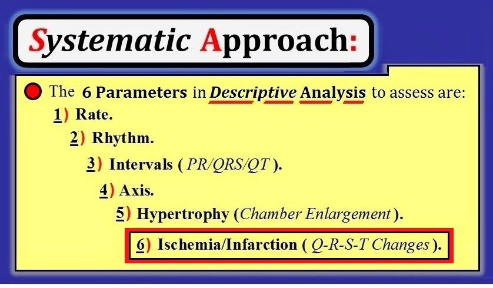
--------------------------------
Đánh giá về Thay đổi Q-R-S-T: Tìm Sóng Q
Trong Basic ECG Concepts #1 — chúng tôi đã định nghĩa sóng Q là sóng lệch xuống thứ 1 của phức bộ QRS. Sau đó chúng tôi phân loại chi tiết hơn bằng cách dùng ký tự hoa hoặc chữ thường — tùy theo sóng Q có rộng và có độ sâu ít nhất 3 mm (= 3 ô nhỏ) trở lên hay không. Các đặc điểm này được minh họa trong Hình 2.
- Sóng Q nhỏ và hẹp (như thấy ở Ô A của Hình 2) — thường gặp bình thường ở người khỏe mạnh. Điều này đặc biệt đúng khi các sóng q nhỏ và hẹp như vậy có mặt ở một hoặc nhiều chuyển đạo bên (các chuyển đạo I, aVL; V4,V5,V6) — nhất là khi bệnh cảnh lâm sàng và phần còn lại của điện tâm đồ có vẻ lành tính.
- Ngược lại — Sóng Q lớn và rộng (như thấy ở Ô B) — có khả năng cao hơn nhiều là chỉ ra rằng vào một thời điểm nào đó đã có MI (nhồi máu cơ tim — Myocardial Infarction). Sóng Q càng lớn và càng rộng — và xuất hiện ở càng nhiều chuyển đạo — thì càng có khả năng chúng chỉ ra MI cũ.
Điểm nâng cao: Hãy lưu ý khả năng thứ 3 liên quan đến sóng Q — trong đó thấy một phức bộ âm hoàn toàn (Ô C). Vì không có sóng dương nào (tức là không có sóng R) — chúng ta không thể biết sóng âm hoàn toàn quan sát được là: i) sóng Q; ii) sóng S; hoặc iii) một sự kết hợp nào đó của cả hai. Như một “giải pháp dung hòa” — hình ảnh này được gọi là phức bộ QS (như thấy ở Ô C).
- Về lâm sàng — hình ảnh QS thường gặp nhất ở một hoặc nhiều chuyển đạo phía trước. Tùy theo các thông số khác (như độ rộng phức bộ QRS và hình dạng sóng ST-T) — ý nghĩa lâm sàng của hình ảnh QS có thể tương tự ý nghĩa lâm sàng của sóng Q rộng (= có thể có nhồi máu trước đây) — nhất là khi thấy phức bộ QS ở nhiều chuyển đạo. Mặt khác — sự hiện diện của một hoặc nhiều phức bộ QS có thể là dấu hiệu bình thường (Xem phần bàn luận về Hình 5 bên dưới).
- LƯU Ý: Mọi quy tắc đều không còn áp dụng (!)— NẾU thấy phức bộ QS ở bệnh nhân có QRS giãn rộng do LBBB (blốc nhánh trái — Left Bundle Branch Block). Trong tình huống này — các phức bộ QS ở chuyển đạo phía trước không chỉ thường gặp, mà còn là biểu hiện đi kèm được dự đoán trước của LBBB (Xem Hình 3 trong Basic ECG Concepts #6).

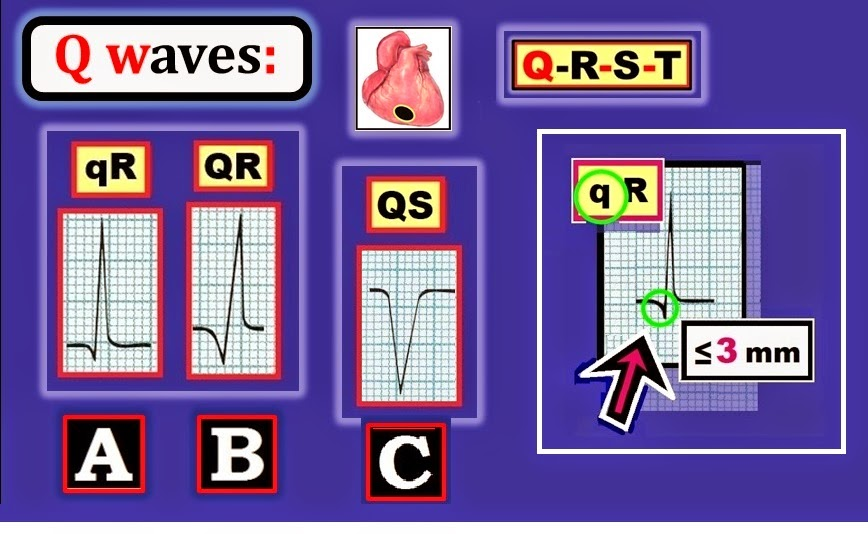
--------------------------------
LƯU Ý lâm sàng: Ngay cả khi sóng Q lớn và rộng cho thấy nhồi máu cũ đã xảy ra (như gợi ý ở Ô B) — riêng sự hiện diện của các sóng Q như vậy không cho chúng ta biết gì về “tuổi” của ổ nhồi máu (tức là nó xảy ra từ nhiều năm trước — hay khá gần đây).
- Để xác định LIỆU MI có thể là “cấp” (tức là khởi phát trong vòng vài giờ qua — và có thể vẫn đang tiếp diễn) hay không — chúng tôi dùng kết hợp: i) Bệnh sử (tức là Có đau ngực mới khởi phát không? — hay — Khó chịu ở ngực là vấn đề kéo dài, không mới khởi phát?); ii) Đánh giá thay đổi sóng ST-T trên các điện tâm đồ ghi nối tiếp (như sẽ bàn ngay sau đây); iii) Xét nghiệm máu, chẳng hạn định lượng troponin tim — trong vòng vài giờ cho thấy nồng độ troponin tăng dần, tương quan tương đối với mức độ tổn thương tim; và đôi khi, iv) Dùng các xét nghiệm khác (có thể gồm siêu âm tim tại giường tìm rối loạn vận động thành tim — hoặc — thông tim tìm một động mạch vành lớn bị tắc cấp).
- Điểm nâng cao = CẢNH BÁO: Mặc dù sóng Q sâu và rộng thường là “dấu ấn” của nhồi máu cũ — dấu hiệu điện tâm đồ này không phải không có ngoại lệ. Một số tình trạng (tức là bệnh cơ tim) có thể tạo ra sóng Q không do nhồi máu (Xem ECG Blog #45). Làm việc đánh giá sóng Q trên điện tâm đồ thêm phức tạp — là thực tế lâm sàng rằng sóng Q liên quan đến nhồi máu không phải lúc nào cũng tồn tại sau biến cố. Theo thời gian — sóng Q có thể hoặc giảm kích thước hoặc biến mất hoàn toàn. Do đó — ngay cả sóng q nhỏ đôi khi cũng có thể là “dấu ấn” của nhồi máu cũ (tức là, nếu một sóng Q nhồi máu trước đây lớn đã thu nhỏ nhưng không biến mất). Cần biết bệnh sử lâm sàng và điện tâm đồ nền của bệnh nhân trông ra sao mới biết được các sóng q nhỏ tồn tại ở bệnh nhân đó có phải là dấu ấn của nhồi máu cũ hay không (giả định rằng vấn đề vị trí đặt điện cực và sự thay đổi trục không phải là nguyên nhân làm thay đổi hình dạng sóng Q).
--------------------------------
Thay đổi Q-R-S-T: Đánh giá “Tăng tiến sóng R”
Như đã đề cập ở phần mở đầu của bài ECG Basic Concepts #7 này — mục đích của chúng tôi khi dùng “Q-R-S-T” như một công cụ ghi nhớ — là để không quên đánh giá thành phần “R” = “Tăng tiến sóng R” ở các chuyển đạo trước tim. Chúng tôi minh họa bằng sơ đồ khái niệm này trong Hình 3 — trong đó hoạt động điện của tim được thể hiện trên Mặt phẳng cắt ngang (mặt phẳng nằm ngang) của tim. Hướng ưu thế của hoạt động điện này là sang trái và ra sau (như gợi ý bởi mũi tên đỏ trong Hình 3). Hướng ưu thế này của hoạt động điện giải thích sự thay đổi hình dạng của phức bộ QRS ở các chuyển đạo trước tim V1-đến-V6 khi ta di chuyển ngang qua ngực:
- Ban đầu, ở chuyển đạo V1 bên phải — QRS chủ yếu âm (phức bộ rS). Đó là vì chuyển đạo V1 thấy phần lớn hoạt động điện của tim đi ra xa phía phải khi LV (thất trái — Left Ventricle) lớn và dày hơn nhiều được khử cực.
- Lưu ý cách sóng R “tăng tiến” — bằng cách cao dần khi ta đi từ chuyển đạo V1 và V2 về phía các chuyển đạo bên trái V5 và V6. Nhìn chung — biên độ sóng R “đạt đỉnh” ở chuyển đạo V5, rồi nhỏ lại ở chuyển đạo V6. Đây là tình huống trong Hình 3 — dù có thể gặp nhiều biến thể của kiểu tăng tiến sóng R này.
- Chúng tôi định nghĩa điểm “Chuyển tiếp” — là vị trí mà sóng R trở nên cao hơn độ sâu của sóng S (được đánh dấu bằng mũi tên xanh lá trong Hình 3). Bình thường — vùng chuyển tiếp nằm giữa chuyển đạo V2-đến-V4. Trong Hình 3, nó nằm giữa chuyển đạo V3-đến-V4.

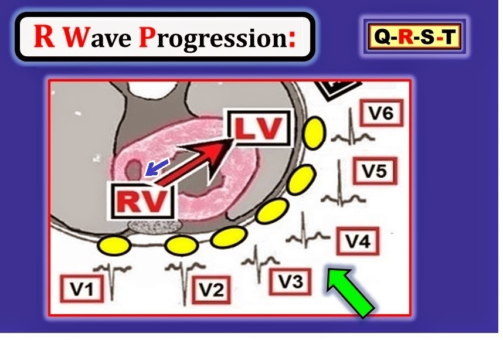
--------------------------------
Khử cực vách: Điểm cuối cùng được minh họa trong Hình 3 dạng sơ đồ — là ảnh hưởng mà khử cực vách có thể gây ra trên điện tâm đồ. Sau khi xung động dẫn truyền từ nút xoang rời nút AV — phần đầu tiên của tâm thất được khử cực là phía trái của vách liên thất. Do đó — hoạt hóa vách bình thường đi từ trái-sang-phải (mũi tên xanh dương nhỏ trong Hình 3).
- Vì hoạt hóa vách bình thường đi về phía chuyển đạo bên phải V1 — thường sẽ có sóng r khởi đầu nhỏ (sóng dương) ở chuyển đạo V1 cũng như ở chuyển đạo V2 (như thấy ở các chuyển đạo này trong Hình 3). Sóng r khởi đầu nhỏ này có thể mất đi khi có nhồi máu vách.
- Đồng thời — hoạt hóa vách bình thường đi ra xa khỏi các chuyển đạo V5,V6 bên trái. Do đó — một hoặc nhiều chuyển đạo bên (tức là chuyển đạo I,aVL; V4,V5,V6) thường sẽ biểu hiện sóng q khởi đầu nhỏ (sóng âm) đơn giản là phản ánh của hoạt hóa vách bình thường. Như đã bàn khi giải thích Hình 2 — sóng q ở chuyển đạo bên khó có khả năng chỉ ra nhồi máu cũ NẾU: i) các sóng q này nhỏ và hẹp; và ii) bệnh cảnh lâm sàng và phần còn lại của điện tâm đồ có vẻ lành tính.
--------------------------------
TỰ KIỂM TRA: Điểm Chuyển tiếp nằm ở đâu?
Hãy nhìn 3 chuỗi chuyển đạo trước tim dạng sơ đồ ở Ô A, B và C của Hình 4. Hãy nhận xét về sự tăng tiến sóng R ở mỗi chuỗi này.
- Trong mỗi trường hợp — hãy chỉ ra 2 chuyển đạo mà giữa chúng xảy ra Chuyển tiếp.
- Theo bạn, thuật ngữ Chuyển tiếp “muộn” có nghĩa là gì?

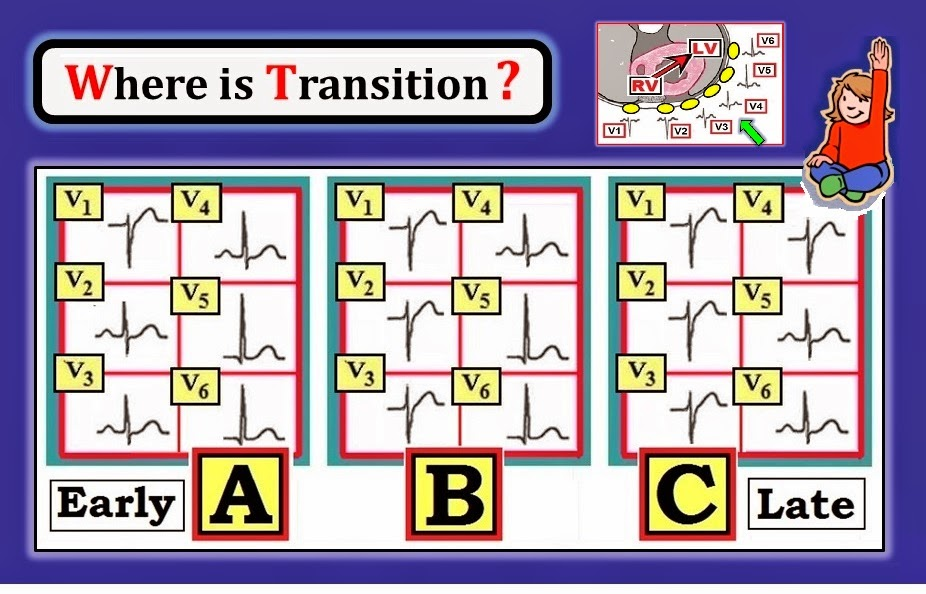
--------------------------------
TRẢ LỜI cho Hình 4: Sóng R “tăng tiến” ở mỗi chuỗi trong 3 chuỗi thể hiện trong Hình này. Ý chúng tôi là biên độ sóng R nhỏ nhất ở chuyển đạo V1 — rồi cao dần khi chuyển sang các chuyển đạo trước tim kế tiếp.
- Chuyển tiếp bình thường xảy ra ở Ô B. Tức là — sóng R trở nên cao hơn độ sâu sóng S giữa chuyển đạo V3-đến-V4.
- Ở Ô A — có Chuyển tiếp “sớm”. Ý chúng tôi là sóng R trở nên cao hơn độ sâu sóng S trước điểm chuyển tiếp bình thường. Cụ thể — Chuyển tiếp ở Ô A xảy ra giữa V1-đến-V2.
- Ở Ô C — có Chuyển tiếp “muộn”. Tức là sóng R trở nên cao hơn độ sâu sóng S sau điểm chuyển tiếp bình thường. Cụ thể — Chuyển tiếp ở Ô C xảy ra giữa V4-đến-V5.
--------------------------------
Tổng hợp lại: Đánh giá “Tăng tiến sóng R”
Việc xem xét Hình 5 sẽ giúp hiểu rõ giá trị lâm sàng của việc thường quy đánh giá thành phần “R” trong thông số “Q-R-S-T”.
- Ô A trong Hình 5 — cho thấy tăng tiến sóng R bình thường. Lưu ý biên độ sóng R tăng dần qua các chuyển đạo trước tim liên tiếp cho tới khi sóng R “đạt đỉnh” ở chuyển đạo V5. Vùng chuyển tiếp ở Ô A là bình thường (xảy ra giữa chuyển đạo V3 và V4). ĐIỂM TINH TẾ: Mặc dù có phức bộ QS ở chuyển đạo V1 — điều này ít có khả năng phản ánh nhồi máu vách cũ vì phức bộ QS chỉ giới hạn ở chuyển đạo V1 (tức là sóng r đã xuất hiện từ chuyển đạo V2 ở Ô A). Các sóng q nhỏ và hẹp ở chuyển đạo V5,V6 gần như chắc chắn là sóng q vách bình thường. Chúng ít có khả năng chỉ ra nhồi máu cũ — vì kích thước nhỏ và vị trí ở thành bên đúng như dự kiến.
- Ngược lại — nhồi máu thành trước được gợi ý bởi chuỗi chuyển đạo trước tim ở Ô B. Đó là vì phức bộ QS được thấy không chỉ ở chuyển đạo V1,V2 — mà còn ở chuyển đạo V3. ĐIỂM TINH TẾ: Chúng ta có thể xác định cụ thể hơn vị trí ổ nhồi máu ở Ô B là “trước vách” — vì mất sóng r ban đầu ở chuyển đạo V1,V2. Lưu ý rằng mặc dù có QS từ V1 đến V3 — vùng chuyển tiếp vẫn “bình thường” (xảy ra giữa chuyển đạo V3 và V4). Cuối cùng — sóng q nhỏ và hẹp đơn độc ở chuyển đạo V6 của Ô B không liên quan tới nhồi máu thành trước và gần như chắc chắn một lần nữa phản ánh sóng q vách bình thường.
- Ngược lại, ở Ô C — hình dạng QS được thấy ở cả chuyển đạo V1 và V2, nhưng không ở chuyển đạo V3. Tức là — có một sóng dương ban đầu (sóng r) nhỏ-nhưng-rõ-ràng ở chuyển đạo V3. Dấu hiệu phức bộ QS ở V1,V2 nhưng không ở V3 — có thể là, cũng có thể không phải, một dấu hiệu “bình thường”. Thay vào đó, nó có thể chỉ ra: i) lỗi kỹ thuật đặt điện cực; ii) nhồi máu vách; hoặc iii) một biến thể bình thường. Vì có thể không có cách nào đáng tin cậy để phân biệt giữa biến thể bình thường với lỗi đặt điện cực với nhồi máu vách cũ — Chúng tôi đơn giản ghi nhận “QS ở V1,V2; Đề nghị đối chiếu lâm sàng” trong phần diễn giải của mình. ĐIỂM TINH TẾ: Xét về thống kê, khả năng cao hơn rất nhiều (xấp xỉ 4 so với 1) là hoặc biến thể bình thường hoặc lỗi đặt điện cực — chứ không phải nhồi máu vách — là nguyên nhân gây ra phức bộ QS ở V1,V2 nhưng không ở V3 (như thấy ở Ô C).

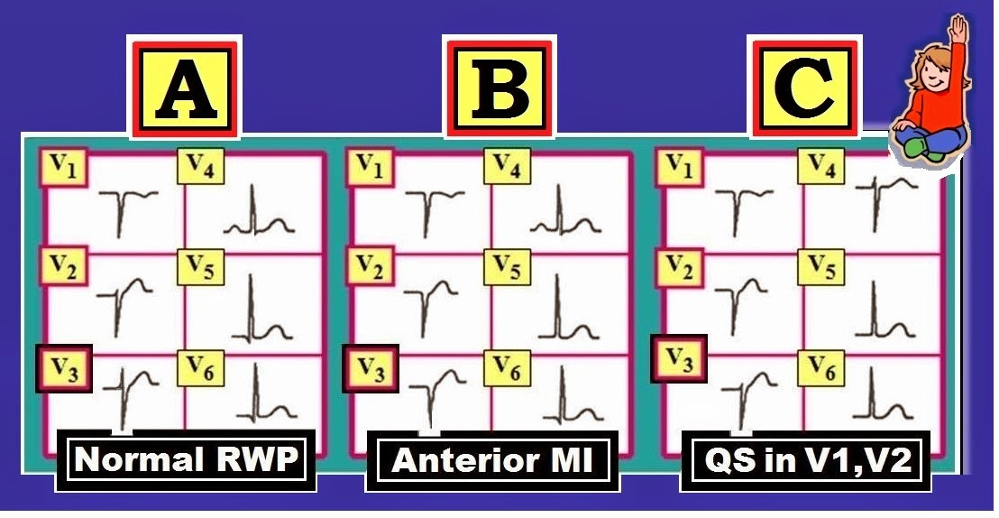
--------------------------------
- LƯU Ý NÂNG CAO-1: Những nhận xét trên về ý nghĩa lâm sàng của phức bộ QS ở chuyển đạo V1,V2,V3 chỉ đúng khi phức bộ QRS hẹp. Như chúng tôi đã lưu ý — QRS giãn rộng do LBBB thường tạo ra phức bộ QS ở các chuyển đạo phía trước, đơn thuần là hậu quả của rối loạn dẫn truyền và không chỉ ra nhồi máu thành trước (Xem Hình 3 trong Basic ECG Concepts #6).
- LƯU Ý NÂNG CAO-2: Có ít nhất 3 lý do phổ biến khác gây PRWP (Poor R Wave Progression – tăng tiến sóng R kém) với phức bộ QRS hẹp mà không phải do nhồi máu cũ. Đó là: i) LVH; ii) LAHB; và iii) Bệnh phổi nặng/COPD. Với các tình trạng khác này, thường sẽ thấy ít nhất một chút sóng r ở chuyển đạo V3 — dù không phải luôn luôn. Điều cốt lõi: Đôi khi cực kỳ khó biết chắc chắn nguyên nhân của PRWP khi sóng R ở chuyển đạo V1,V2,V3 hoặc rất nhỏ hoặc không có. Đối chiếu lâm sàng là thiết yếu.
V
ượt ra ngoài phần cốt lõi: Thật bổ ích khi hiểu được lý do sinh lý vì sao tăng tiến sóng R thường “kém” khi có các tình trạng khác này.
- LVH (Left Ventricular Hypertrophy – phì đại thất trái) — làm tăng các lực hướng sang trái và ra sau. Khi rõ rệt — các lực hướng sang trái và ra sau này có thể hoàn toàn lấn át các lực ban đầu hướng sang phải và ra trước thấy ở chuyển đạo V1,V2,V3. Kết quả là giảm biên độ sóng r ở các chuyển đạo phía trước. Đôi khi — thậm chí có thể mất hẳn sóng r ở V1,V2,V3.
- LAHB (Left Anterior HemiBlock – blốc phân nhánh trái trước) — Bó sợi dẫn truyền trong LAH (Left Anterior Hemifascicle – phân nhánh trái trước) nằm hơi phía trước (ở trước) các sợi của LPH (Left Posterior Hemifascicle – phân nhánh trái sau). Do đó — blốc ở LAH (như xảy ra trong LAHB) tạo ra hướng ra sau ban đầu cho hoạt động điện, vốn được dẫn truyền trước tiên qua LPH còn nguyên vẹn. Kết quả một lần nữa có thể là giảm biên độ sóng r ở các chuyển đạo phía trước.
- COPD (Chronic Obstructive Pulmonary Disease – bệnh phổi tắc nghẽn mạn tính) — Bệnh phổi nặng kéo dài dẫn tới tăng các lực thất phải. Ngoài ra — hướng của các lực điện của tim trong không gian 3 chiều có thể bị thay đổi bởi lồng ngực khí phế thũng lớn của bệnh nhân COPD mạn. Những thay đổi sinh lý này có thể gây ra các dấu hiệu điện tâm đồ của tăng tiến sóng R kém; sóng S trước tim tương đối sâu vẫn tồn tại ở các chuyển đạo ngực bên; và xuất hiện trục không xác định trên mặt phẳng ngang. Ở mức cực độ — sóng R giảm rõ rệt về kích thước (và thậm chí có thể không có) ở các chuyển đạo trước tim phía trước.
--------------------------------
QRST: Đánh giá tìm Bất thường Sóng ST-T
Cuối cùng chúng ta cũng tới phần đánh giá Thay đổi Sóng ST-T. Rõ ràng — đây là một chủ đề riêng, đòi hỏi áp dụng lâm sàng và thực hành rất nhiều mới đạt được sự tự tin khi đánh giá. Ở đây chúng tôi giới hạn trình bày ở mức mô tả cơ bản những thay đổi cần tìm — với Mục tiêu củng cố các nguyên tắc này trong các kỳ tới của loạt bài Basic ECG Concepts.
- Trong Basic ECG Concepts #6 — Chúng tôi đã định nghĩa đường nền làm mốc để đánh giá độ lệch đoạn ST (chênh lên hoặc chênh xuống). Đoạn ST bình thường là đẳng điện. Nó nằm trên đường nền — và không “chênh lên” cũng không “chênh xuống” (Hình 6). Mặc dù nhìn chung chúng tôi ưu tiên dùng đường nền đoạn PR — có thể chọn đường nền TP thay thế. Những đặc điểm riêng trên một bản ghi cụ thể (như mức độ trôi đường nền hoặc có đoạn PR chênh xuống) có thể ảnh hưởng tới việc chọn đường nền nào — hoặc có sử dụng kết hợp cả đoạn PR và đoạn TP trong một trường hợp cụ thể hay không.
- Tần số tim là một yếu tố khác có thể ảnh hưởng tới lựa chọn đường nền (PR, TP hoặc cả hai). Ví dụ, nhịp nhanh xoang có thể rút ngắn khoảng PR, cũng như giảm thời gian đoạn TP. Rõ ràng — việc xác định chính xác “đường nền” thực sự để đánh giá độ lệch ST-T sẽ không phải lúc nào cũng rõ ràng như ở Hình 6.

--------------------------------
Hình dạng Sóng ST-T: Phân tích mô tả đoạn ST và sóng T đòi hỏi chú ý tới các điểm sau:
- Có ST chênh lên hoặc chênh xuống? NẾU có — Bao nhiêu? Điểm J lệch lên trên hoặc xuống dưới đường nền bao xa?
- Các thay đổi ST-T (nếu có) có hình dạng thế nào? (tức là, lõm hướng lên = dạng “mặt cười” — hoặc dạng vòm đáng lo ngại hơn = dạng “mặt mếu” — Xem Hình 7 bên dưới).
- Phần nào (vị trí) của tim biểu hiện độ lệch đoạn ST (chênh lên hoặc chênh xuống)? — hay các thay đổi ST-T là lan toả, như có thể gặp với ST chênh lên lan toả của viêm màng ngoài tim cấp — hoặc ST chênh xuống lan toả của bệnh mạch vành rất nặng. (LƯU Ý: Các Nhóm Chuyển đạo khác nhau dùng để định khu thay đổi ST-T đã được ôn lại trong Basic ECG Concepts #4).
V
ề Chuyển đạo aVR: Với mục đích “kiến thức cơ bản” — Chúng ta không bận tâm tới chuyển đạo aVR ở thời điểm này, ngoài việc biết rằng bình thường có thể có sóng Q và/hoặc sóng T đảo ngược ở chuyển đạo này. Thay vào đó — Tập trung sự chú ý vào 11 chuyển đạo còn lại, xem xét từng chuyển đạo để tìm thay đổi QRST.
- Tối ưu hoá việc sử dụng Chuyển đạo aVR là một chủ đề nâng cao. Dành cho những ai quan tâm tới chủ đề này — Bấm VÀO ĐÂY để tải về một PDF trích từ ECG-2014-ePUb của chúng tôi, trong đó trình bày chi tiết nhiều cách chúng tôi sử dụng chuyển đạo aVR khi đọc điện tâm đồ.
--------------------------------
HÌNH 7: Thêm về Thay đổi Sóng ST-T
Phân tích mô tả sóng ST-T đòi hỏi nhận biết một số hình thái cơ bản. Chúng tôi minh hoạ dạng sơ đồ các hình thái này ở Hình 7 — trong đó so sánh sóng ST-T bình thường với các thay đổi ST-T thường gặp nhất mà bạn có thể thấy. Lưu ý những điểm sau:
- Ô A (ở Hình 7) — Sóng ST-T bình thường. Tức là — không có ST chênh lên hay chênh xuống. Lưu ý có sự chuyển tiếp mượt mà giữa phần cuối đoạn ST và phần đầu sóng T. Trên điện tâm đồ bình thường — sóng T sẽ dương ở hầu hết các chuyển đạo có phức bộ QRS dương (chủ yếu hướng lên). Điều này sẽ trở nên rõ ràng khi chúng ta xem thêm nhiều điện tâm đồ.
- Ô B (ở Hình 7) — Có sóng ST-T dẹt. Khi ST-T dẹt, rất khó xác định đoạn ST kết thúc và sóng T bắt đầu ở đâu. Đây là một thay đổi không đặc hiệu — đơn giản nghĩa là sóng ST-T không “bình thường”, nhưng chúng ta không biết lý do vì sao.
- Ô C — Có ST chênh xuống nhẹ. Có nhiều nguyên nhân có thể gây ST chênh xuống. Bao gồm thiếu máu cục bộ — “tăng gánh” do LVH (Xem Hình 4 trong Basic ECG Concepts #5) — rối loạn điện giải — tần số tim nhanh — và/hoặc các yếu tố ngoài tim như căng thẳng cảm xúc hoặc tăng thông khí. Chính vì có quá nhiều nguyên nhân tiềm tàng gây ST-T dẹt hoặc chênh xuống — mà đối chiếu lâm sàng là thiết yếu để đọc điện tâm đồ tối ưu.
- Ô D — Có sóng ST-T chênh xuống không đối xứng (mũi tên đỏ). Khi biên độ QRS tăng ở bệnh nhân tăng huyết áp hoặc bệnh tim lâu năm — kiểu ST chênh xuống không đối xứng này là đặc trưng của “tăng gánh” thất trái (LV strain) do LVH.
- Ô E — Có sóng T đảo ngược đối xứng. Trái với ST chênh xuống không đối xứng đi kèm LVH (Ô D) — hình dạng đối xứng hơn của sóng T đảo ngược ở Ô E (mũi tên xanh lá) gợi ý thiếu máu cục bộ nhiều hơn hẳn.
- Ô F và Ô G — minh hoạ các hình dạng khác nhau của ST chênh lên (Xem bên dưới).

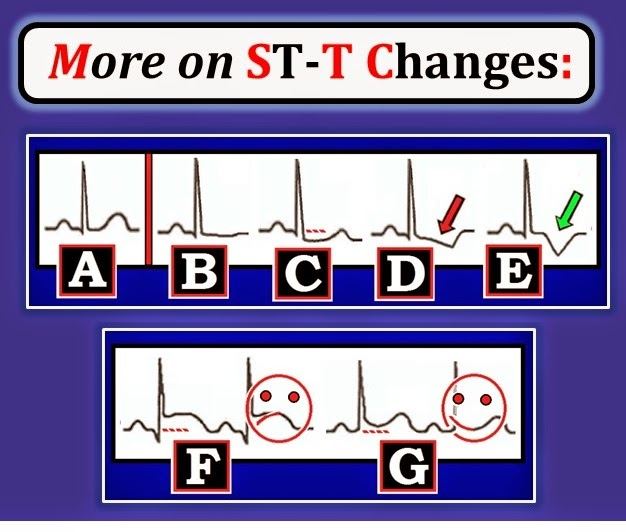
--------------------------------
HÌNH 8: 4 Dấu hiệu Điện tâm đồ của MI Cấp
Dấu ấn đặc trưng của tắc động mạch vành cấp (là nguyên nhân của phần lớn các MI cấp) — là sự xuất hiện ST chênh lên trên điện tâm đồ. Mặc dù điện tâm đồ không phải là chỉ điểm hoàn hảo để xác định ai đang hay không đang bị MI cấp — điện tâm đồ sẽ thường có thể cho biết NẾU đã xảy ra tắc cấp một động mạch lớn (dựa trên kiểu ST chênh lên và chênh xuống ở các chuyển đạo khác nhau). Chúng tôi ôn lại 4 Dấu hiệu Điện tâm đồ của MI cấp ở Hình 8:
- Thay đổi điện tâm đồ thứ 1 (thấy ở Ô 1 của Hình 8) — là ST chênh lên dạng vòm xuất hiện ở các chuyển đạo nằm trên vùng nhồi máu cấp. Biểu tượng “mặt mếu” ở Ô F (từ Hình 7) — giúp nhớ lại hình dạng đáng lo ngại thường chỉ ra STEMI cấp (ST Elevation Myocardial Infarction – nhồi máu cơ tim ST chênh lên) ở bệnh nhân đau ngực. Ngược lại — biểu tượng “mặt cười” ở Ô G (từ Hình 7) — giúp nhớ lại hình dạng lõm hướng lên thường là lành tính.
- Sóng Q (thấy ở Ô 3 của Hình 8) — thường xuất hiện ở một hoặc nhiều chuyển đạo trong một vùng chuyển đạo sau khi cơ tim bị hoại tử. Sóng Q đóng vai trò dấu hiệu cho thấy nhồi máu đã xảy ra.
- Sóng T đảo ngược đối xứng (như ở Ô 2) — thường chỉ ra cơ tim bị thiếu máu cục bộ (nhưng chưa tổn thương không hồi phục).
- ST chênh xuống (như ở Ô 4) — có thể thấy ở các chuyển đạo đối diện (hoặc ở xa) vùng ST chênh lên — khi đó ST chênh xuống này được gọi là thay đổi “soi gương” (reciprocal) . Ngoài ra — ST chênh xuống có thể đơn thuần chỉ ra thiếu máu cục bộ (Xem Ghi chú lâm sàng bên dưới).

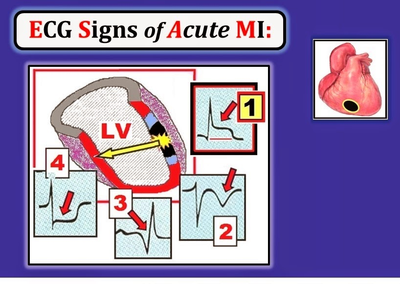
--------------------------------
GHI CHÚ LÂM SÀNG về Hình 8: Có nhiều ngoại lệ đối với những nguyên tắc chung nêu trên trong chẩn đoán nhồi máu cấp trên điện tâm đồ. Bàn về những chi tiết phức tạp của các ngoại lệ này — rõ ràng vượt quá phạm vi của bài blog này. Dù vậy — các khái niệm cơ bản được thảo luận ở đây sẽ rất hữu ích cho việc đánh giá điện tâm đồ ban đầu ở bệnh nhân đau ngực mới khởi phát. Chúng tôi nhấn mạnh thêm các điểm lâm sàng sau:
- Không phải mọi MI đều xuất hiện ST chênh lên và/hoặc sóng Q. Một số bệnh nhân chỉ biểu hiện sóng T đảo ngược mà không bao giờ xuất hiện sóng Q. Bằng chứng xác nhận MI cấp đã xảy ra ở những bệnh nhân này đến từ: i) Bệnh sử (tức là đau ngực mới khởi phát); và ii) xét nghiệm máu dương tính với nhồi máu cấp (tức là tăng troponin huyết thanh).
- Về lý thuyết — thay đổi sóng ST-T ở Ô 1, 2 và 4 của Hình 8 sẽ hồi phục sau khi biến cố cấp qua đi, đến mức chỉ còn lại sóng Q. Như đã nhấn mạnh khi bàn về Hình 2 ở trên — sóng Q càng lớn và càng rộng và xuất hiện ở càng nhiều chuyển đạo — thì các sóng Q đó càng có khả năng chỉ ra nhồi máu đã xảy ra.
- Hãy Cảnh giác! — Có một số “giả dạng” khét tiếng của nhồi máu cấp. Như đã đề cập ở trên — có nhiều nguyên nhân có thể gây ST chênh xuống ngoài thiếu máu cục bộ. Bao gồm “tăng gánh” do LVH — rối loạn điện giải — tần số tim nhanh — và/hoặc các yếu tố ngoài tim như căng thẳng cảm xúc hoặc tăng thông khí. Cũng có các nguyên nhân khác gây ST chênh lên, bao gồm hình ảnh tái cực sớm và viêm màng ngoài tim cấp. ĐIỀU CỐT LÕI: Không phải lúc nào cũng dễ xác định nguyên nhân của bất thường sóng ST-T. Chính vì có quá nhiều nguyên nhân tiềm tàng gây bất thường sóng ST-T — mà Bệnh sử lâm sàng rất quan trọng trong đánh giá từng bệnh nhân.
T
ÓM TẮT: MẤU CHỐT của việc dùng điện tâm đồ để đánh giá bệnh nhân đau ngực — là nhận ra STEMI cấp (ST Elevation Myocardial Infarction) ở thời điểm sớm nhất có thể. Đây là nhóm bệnh nhân có khả năng hưởng lợi nhiều nhất từ tái tưới máu cấp (= nhanh chóng mở thông mạch vành bị tắc cấp — hoặc bằng nong mạch bằng bóng trong thông tim cấp cứu hoặc bằng thuốc tiêu sợi huyết ‘làm tan cục máu đông’).
- Hãy nhớ các Dấu hiệu Điện tâm đồ ở Hình 8. STEMI cấp được gợi ý bởi những điểm sau: i) Bệnh sử đau ngực mới khởi phát (thường trong vài giờ qua); ii) ST chênh lên đáng lo ngại (dạng “mặt mếu”) — ở 2 chuyển đạo trở lên trong cùng một vùng chuyển đạo; iii) ST chênh xuống soi gương ở các vùng chuyển đạo khác; và iv) Nhiều nhất chỉ có sóng Q nhỏ tại thời điểm bạn khám bệnh nhân lần đầu (vì sự xuất hiện sóng Q lớn gợi ý nhồi máu không còn mới như vậy).
- Hãy nhớ rằng có những ngoại lệ đối với các nguyên tắc chung nêu trên.
--------------------------------
BẢN GHI THỰC HÀNH: Đánh giá Thay đổi Q-R-S-T
Hãy áp dụng các khái niệm đã học tới giờ — với một loạt Bản ghi Thực hành. Do giới hạn dung lượng — phần diễn giải 5 Thông số đầu tiên (tức là Rate-Rhythm-Intervals-Axis-Hypertrophy – tần số-nhịp-các khoảng-trục-phì đại) được cho sẵn. Chúng ta bắt đầu với điện tâm đồ ở Hình 9 — ghi từ một bệnh nhân đau ngực mới khởi phát.
- Đánh giá điện tâm đồ ở Hình 9 để tìm Thay đổi Q-R-S-T.
- Dựa trên bệnh sử — Nhận định Lâm sàng của bạn là gì?

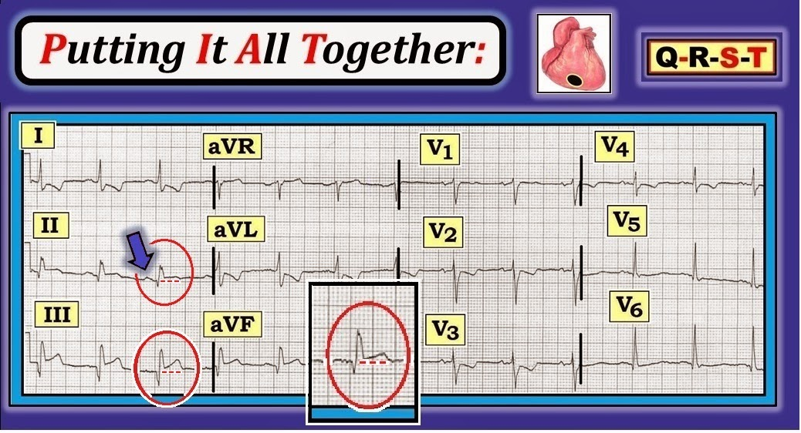
--------------------------------
5 Thông số đầu tiên: Nhịp ở Hình 9 là nhịp xoang — xác định dựa vào sóng P dương với khoảng PR cố định ở chuyển đạo II (mũi tên xanh dương). Tần số ~75/phút. Tất cả các khoảng đều bình thường. Tức là — khoảng PR không quá 1 ô lớn; QRS không quá 1/2 ô lớn; và QT không quá 1/2 khoảng R-R. Trục bình thường (có lẽ trong khoảng +40-60 độ). Không có lớn buồng tim.
Đánh giá Thay đổi Q-R-S-T:
- Sóng Q lớn được thấy ở từng chuyển đạo thành dưới (II,III,aVF) ở Hình 9 — và sóng q nhỏ được thấy ở chuyển đạo V5,V6.
- Vùng chuyển tiếp bình thường (sóng R trở nên cao hơn độ sâu sóng S ở giữa chuyển đạo V3 và V4).
- Các dấu hiệu nổi bật nhất trên bản ghi này liên quan tới Thay đổi Sóng ST-T. Có: i) ST chênh lên ở cả 3 chuyển đạo thành dưới (II,III,aVF); và ii) ST chênh xuống ở các chuyển đạo khác trên bản ghi (I,aVL; V2,V3,V4) kèm đoạn ST dẹt ở chuyển đạo V5,V6.
Nhận định lâm sàng: Dựa trên bệnh sử lâm sàng đau ngực mới khởi phát — Chúng tôi sẽ viết như sau làm “Nhận định lâm sàng” cho điện tâm đồ này:
- Nhịp xoang ~75/phút.
- STEMI thành dưới cấp (vì các chuyển đạo có ST chênh lên là 3 chuyển đạo thành dưới). Chúng tôi khuyến nghị đối chiếu lâm sàng ngay lập tức — vì bệnh nhân này có vẻ là ứng viên rất phù hợp cho tái tưới máu cấp.
Các
LƯU Ý BỔ SUNG về Hình 9: Tất cả các dấu hiệu điện tâm đồ của MI đang tiến triển cấp đều có mặt ở bệnh nhân này, người đến khám vì đau ngực mới khởi phát:
- Có ST chênh lên ở từng chuyển đạo thành dưới (Lưu ý đoạn ST chênh rõ ràng lên trên đường nền đoạn PR — như thấy trong các hình bầu dục đỏ ở Hình 9). Ngoài ra — sóng T thành dưới ở chuyển đạo III trông nhọn, gợi ý thay đổi “tối cấp”.
- Có sóng Q ở từng chuyển đạo thành dưới.
- Có ST chênh xuống “soi gương” ở các chuyển đạo khác (bao gồm chuyển đạo I,aVL; V2,V3,V4) Việc thấy ST-T chênh xuống ở các chuyển đạo ở xa vùng chuyển đạo có ST chênh lên (chuyển đạo II,III,aVF) — ủng hộ mạnh mẽ nhận định của chúng tôi rằng ST chênh lên thành dưới trên bản ghi này là cấp ở bệnh nhân đau ngực mới khởi phát này.
- Vượt ra ngoài kiến thức cơ bản: Có thể nêu một số điểm nâng cao hơn về bản ghi này: i) Ngoài việc là “thay đổi soi gương” — ST chênh xuống ở chuyển đạo V2 đến V4 cũng có thể phản ánh nhồi máu thành sau cấp; ii) “Động mạch thủ phạm” (= bị tắc cấp) — có lẽ là RCA (Right Coronary Artery – động mạch vành phải) — vì ST chênh lên ở chuyển đạo III rõ ràng nhiều hơn ở chuyển đạo II; và iii) Chúng tôi cũng nghi ngờ nhồi máu RV (Right Ventricular – thất phải) cấp — vì thay vì ST chênh xuống tương tự như thấy ở chuyển đạo V2 — đoạn ST ở chuyển đạo V1 bên phải lại dẹt (có lẽ vì ST chênh lên ở chuyển đạo V1 bên phải do MI thất phải cấp đã triệt tiêu một phần ST chênh xuống mà chúng ta dự kiến thấy ở chuyển đạo V1 do MI thành sau).
- Điểm cuối cùng: Cần lưu ý rằng sóng Q khá lớn đã xuất hiện trên bản ghi này! Dấu hiệu này đặt ra nghi vấn về “tuổi” của STEMI này — vì thường cần ít nhất một chút thời gian để sóng Q nhồi máu hình thành. Dù vậy — vì bệnh sử là đau ngực “mới khởi phát” và các thay đổi điện tâm đồ khác trông có vẻ cấp — bệnh nhân này vẫn có thể hưởng lợi từ tái tưới máu cấp.
--------------------------------
TỰ KIỂM TRA: Có STEMI Cấp không?
Hãy đọc điện tâm đồ ở Hình 10 — ghi từ một bệnh nhân đau ngực mới khởi phát.
- Đánh giá điện tâm đồ ở Hình 10 để tìm Thay đổi Q-R-S-T.
- Dựa trên bệnh sử — Nhận định Lâm sàng của bạn là gì?

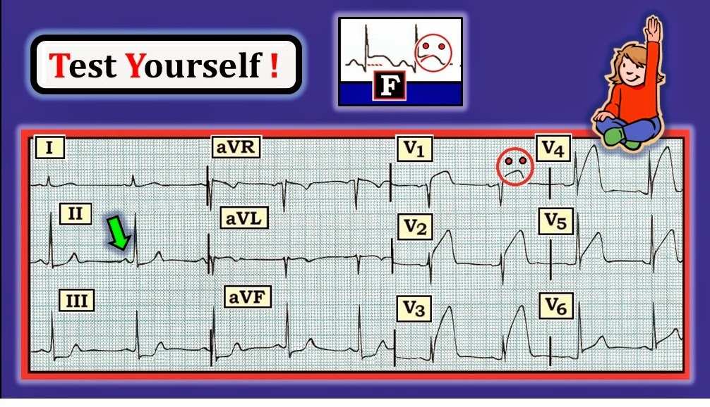
--------------------------------
5 Thông số đầu tiên: Nhịp ở Hình 10 là nhịp xoang — một lần nữa được xác định dựa vào sóng P dương với khoảng PR cố định ở chuyển đạo II (mũi tên xanh lá). Tần số ~60/phút. Tất cả các khoảng đều bình thường. Trục bình thường (có lẽ trong khoảng +60-85 độ). Không có lớn buồng tim.
Đánh giá Thay đổi Q-R-S-T:
- Không thấy sóng Q.
- Vùng chuyển tiếp bình thường (sóng R trở nên cao hơn độ sâu của sóng S ở giữa chuyển đạo V2 và V3).
- Dấu hiệu nổi bật nhất trên bản ghi này là ST chênh lên rất rõ rệt bắt đầu từ chuyển đạo V1 — và lan rộng qua cả 6 chuyển đạo trước ngực. ST chênh lên có dạng vòm (coving) (hình “mặt mếu”-) — và rõ nhất ở các chuyển đạo V2 đến V4. Ngoài ra — có ST chênh xuống soi gương (reciprocal) ở các chuyển đạo thành dưới (II,III,aVF).
Nhận định lâm sàng: Xét bệnh sử đau ngực mới khởi phát — Chúng tôi sẽ viết như sau làm “Nhận định lâm sàng” cho điện tâm đồ này:
- Nhịp xoang ~60 lần/phút.
- STEMI trước-bên diện rộng và cấp tính. Chúng tôi khuyến nghị đối chiếu lâm sàng ngay lập tức — vì bệnh nhân này có vẻ là một ứng viên rất phù hợp để tái tưới máu cấp.
Bổ sung
LƯU Ý về Hình 10: Đây là một ổ nhồi máu lớn! ST chênh lên thấy ở cả 6 chuyển đạo trước tim — và mức độ ST chênh lên ở nhiều chuyển đạo trong số này là rõ rệt. Dù vậy, điều “tin tốt” — là hình ảnh điện tâm đồ ở Hình 10 gợi ý rằng nhồi máu cơ tim vẫn đang ở giai đoạn tương đối sớm của quá trình tiến triển vì: i) Đoạn ST vẫn còn chênh lên rõ rệt; ii) Có ST chênh xuống soi gương ở các chuyển đạo khác; và iii) Chưa hình thành sóng Q. Chúng tôi nêu thêm các điểm sau:
- Có thể xác định chính xác hơn ổ nhồi máu này “cũ” đến mức nào — đơn giản bằng cách hỏi bệnh nhân: “Cơn đau ngực của anh/chị bắt đầu từ KHI NÀO?
- Động mạch “thủ phạm” (bị cục huyết khối bít tắc cấp tính) được tái tưới máu (tức là được mở thông để khôi phục dòng máu tới tim — bằng nong mạch bằng bóng hoặc thuốc tiêu sợi huyết ‘làm tan cục máu đông’) càng sớm — thì kết cục càng tốt hơn. Đó là lý do vì sao việc nhận diện các STEMI cấp như ở Hình 10 ở một thời điểm sớm của quá trình là rất quan trọng.
- Như đã bàn trong Basic ECG Concepts #4 — các vùng giải phẫu của tim có vẻ bị ảnh hưởng nhiều nhất ở Hình 10 là: i) Vách (ST chênh lên ở các chuyển đạo V1,V2); ii) Thành trước (ST chênh lên ở các chuyển đạo V2 đến V4); và iii) Thành bên (ST chênh lên ở các chuyển đạo V4 đến V6). Có thể tóm tắt mức độ ảnh hưởng này bằng cách nói rằng đây hoặc là STEMI trước-bên diện rộng, hoặc là STEMI trước-vách-bên.
- Vượt-ra-ngoài-phần-Cơ-bản: Có thể nêu thêm một số điểm nâng cao về bản ghi này: i) Thấy ST chênh xuống soi gương ở các chuyển đạo thành dưới. Tuy vậy — ST chênh xuống soi gương không phải lúc nào cũng xuất hiện ở mọi nhồi máu cơ tim thành trước cấp; ii) Động mạch “thủ phạm” (= bị tắc cấp tính) — có lẽ là động mạch vành LAD (động mạch liên thất trước — Left Anterior Descending) — vì vùng chuyển đạo có ST chênh lên tối đa nằm ở phía trước; iii) Có thể tiến thêm một bước là nghi ngờ tắc LAD đoạn gần vì có ST chênh lên rõ rệt ở chuyển đạo V1 và ST chênh xuống soi gương ở các chuyển đạo thành dưới (trong khi tắc LAD đoạn giữa hoặc đoạn xa thường không có dấu hiệu nào trong hai dấu hiệu đó); và iv) Bệnh thân chung động mạch vành trái ít có khả năng hơn ở Hình 10 vì có ST chênh lên rõ rệt ở chuyển đạo V1 nhưng không có ST chênh lên ở chuyển đạo aVR (trong khi bệnh thân chung nặng thường biểu hiện ST chênh lên ở aVR, kèm mức ST chênh lên ít hơn [nếu có] ở chuyển đạo V1).
--------------------------------
TỰ KIỂM TRA: Nhồi máu cơ tim Cấp hay Tái cực Sớm?
Hãy đọc điện tâm đồ ở Hình 11 — ghi từ một người trẻ tuổi không triệu chứng đến khám sức khoẻ định kỳ trước tuyển dụng.
- Đánh giá điện tâm đồ ở Hình 11 về Thay đổi Q-R-S-T.
- Xét bệnh sử — Nhận định lâm sàng của bạn là gì?

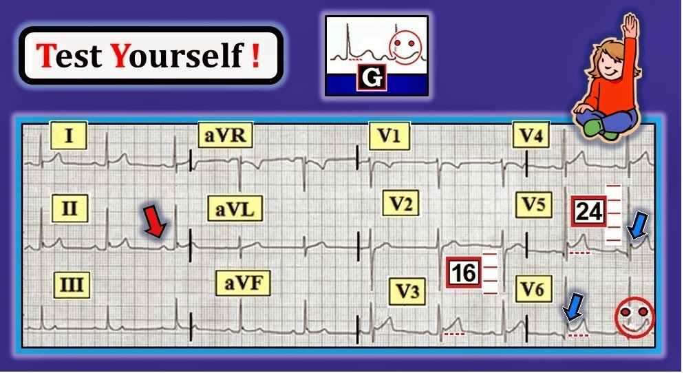
--------------------------------
5 thông số đầu tiên: Nhịp ở Hình 11 là nhịp xoang — xác định dựa vào sóng P dương với khoảng PR cố định ở chuyển đạo II (mũi tên đỏ). Tần số ~60 lần/phút. Các khoảng đều bình thường. Trục bình thường (gần +60 độ). Tiêu chuẩn điện thế của LVH sẽ thỏa NẾU bệnh nhân ≥35 tuổi.
Đánh giá Thay đổi Q-R-S-T:
- Thấy sóng q nhỏ và hẹp ở các chuyển đạo V5,V6.
- Vùng chuyển tiếp bình thường (sóng R trở nên cao hơn độ sâu của sóng S ở giữa chuyển đạo V2 và V3).
- Dấu hiệu nổi bật nhất trên bản ghi này là ST chênh lên tại điểm J, lõm lên trên (tức là dạng “mặt cười”) xuất hiện ở nhiều chuyển đạo — gồm các chuyển đạo I, II và V3 đến V6. Mức độ ST chênh lên ở các chuyển đạo này khá lớn — đạt ít nhất 3 mm ở chuyển đạo V5.
- Không có ST chênh xuống soi gương.
Nhận định lâm sàng: Xét bệnh sử (tức là điện tâm đồ này ghi từ một người trẻ tuổi không triệu chứng đến khám sức khoẻ định kỳ trước tuyển dụng) — Chúng tôi sẽ viết như sau làm “Nhận định lâm sàng” cho điện tâm đồ này:
- Nhịp xoang ~60 lần/phút.
- ST chênh lên dốc lên ở nhiều chuyển đạo, nhiều khả năng phản ánh ERP (hình ảnh tái cực sớm — Early Repolarization Pattern).
- Đề nghị đối chiếu lâm sàng.
Bổ sung
LƯU Ý về Hình 11: Manh mối thứ 1 cho thấy điện tâm đồ này nhiều khả năng lành tính — là bệnh sử (tức là một người trẻ tuổi không triệu chứng đến khám sức khoẻ định kỳ trước tuyển dụng). Dù vậy — ngay cả người trẻ ở độ tuổi 20 đôi khi cũng có thể bị nhồi máu cơ tim cấp. Vì thế, trách nhiệm thuộc về chúng ta phải chứng minh rằng ST chênh lên thấy trên bản ghi này không phải là STEMI cấp (chứ không phải ngược lại). Các dấu hiệu điện tâm đồ cho thấy vì sao mặc dù ST chênh lên ở Hình 11 khá nhiều — các biến đổi ST-T này nhiều khả năng lành tính gồm:
- Các sóng q thấy ở chuyển đạo V5,V6 nhỏ và hẹp (tức là nhiều khả năng đó là sóng q vách bình thường, thường gặp ở một hoặc nhiều chuyển đạo bên).
- ST chênh lên có dạng “mặt cười” (dạng thường gặp và thường là dấu hiệu lành tính khi xuất hiện ở người trẻ khỏe mạnh).
- Ngoài dạng lõm lên trên (mặt cười) của các đoạn ST chênh lên ở Hình 11 — còn thấy khía ở điểm J ở nhiều chuyển đạo (mũi tên xanh dương ở V5,V6 — và cả ở các chuyển đạo II, aVF, V3,V4). Khía điểm J này (đã minh họa trước đó ở Ô D của Hình 6 ở trên) — rất đặc trưng cho hình ảnh tái cực lành tính.
- Không có ST chênh xuống soi gương ở Hình 11.
- Vượt-ra-ngoài-phần-Cơ-bản: Biết bệnh sử là thiết yếu để đọc điện tâm đồ ở Hình 11. Như đã nhấn mạnh ở cuối phần bàn luận trong Basic ECG Concepts #6 — chính điện tâm đồ y hệt này có thể được đọc rất khác NẾU bệnh sử gợi ý hoặc viêm màng ngoài tim hoặc hội chứng vành cấp. Chủ yếu là vì chúng ta được biết bệnh nhân là một người trẻ không triệu chứng nên mới có thể tự tin đọc bản ghi này là ERP.
- Để Ôn tập chi tiết hơn về Hình ảnh Tái cực Sớm — Xem Mục 09.14 đến 09.24 trong tệp pdf này từ ECG-2014-ePub.
--------------------------------
TỰ KIỂM TRA: Thiếu máu cục bộ/Nhồi máu Cấp hay Tăng gánh thất trái (LV “Strain”)?
Hãy đọc điện tâm đồ ở Hình 12 — ghi từ một người đàn ông 60 tuổi bị tăng huyết áp lâu năm. Ông ấy đang bị đau ngực.
- Đánh giá điện tâm đồ ở Hình 12 về Thay đổi Q-R-S-T.
- Xét bệnh sử — Nhận định lâm sàng của bạn là gì?

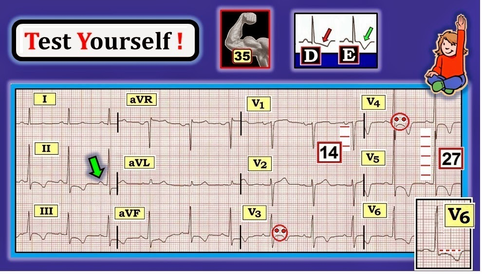
--------------------------------
5 thông số đầu tiên: Nhịp ở Hình 12 là nhịp xoang — xác định dựa vào sóng P dương với khoảng PR cố định ở chuyển đạo II (mũi tên xanh lá). Tần số ~70 lần/phút. Các khoảng đều bình thường. Trục bình thường (gần +50 độ). Chắc chắn thỏa tiêu chuẩn điện thế của LVH (Tổng sóng S sâu nhất ở V1,V2 + sóng R cao nhất ở V5,V6 rõ ràng >35 mm).
Đánh giá Thay đổi Q-R-S-T:
- Không có sóng Q (ngoại trừ ở chuyển đạo aVR — điều này được chấp nhận). Chúng tôi cho rằng có một sóng dương đầu tiên (sóng r) rất nhỏ nhưng có thật ở chuyển đạo V1 của Hình 12. Ngay cả khi không có sóng r nhỏ đầu tiên — một phức bộ QS đơn độc ở chuyển đạo V1 là thường gặp và tự nó không phải bất thường.
- Vùng chuyển tiếp bình thường (xảy ra ở giữa V2 và V3).
- Dấu hiệu nổi bật nhất ở Hình 12 là sóng T đảo ngược sâu, đối xứng ở nhiều chuyển đạo (tức là các chuyển đạo II,III,aVF; và V3 đến V6). Hình dạng của các sóng ST-T này rất giống sóng T đảo ngược đối xứng ở Ô E trong Hình 7 (nhất là ở các chuyển đạo V3,V4,V5). Cần phân biệt với sóng ST-T chênh xuống không đối xứng ở Ô D trong Hình 7, vốn đặc trưng hơn cho tăng gánh thất trái (LV “strain”). Một điểm tinh tế — sóng ST-T ở chuyển đạo V6 của Hình 12 trông trung gian giữa hình ảnh của Ô D và Ô E (Xem ảnh phóng to chèn thêm của chuyển đạo V6).
Nhận định lâm sàng: Xét bệnh sử (tức là điện tâm đồ này ghi từ một người đàn ông 60 tuổi bị tăng huyết áp và đau ngực) — Chúng tôi sẽ viết như sau làm “Nhận định lâm sàng” cho điện tâm đồ này:
- Nhịp xoang ~70 lần/phút.
- LVH (phì đại thất trái — Left Ventricular Hypertrophy).
- Về Thay đổi Sóng ST-T — nhiều khả năng có cả tăng gánh thất trái lẫn thiếu máu cục bộ ở bệnh nhân tăng huyết áp kèm đau ngực này.
- Đề nghị đối chiếu lâm sàng.
Bổ sung
LƯU Ý về Hình 12: Có một số điểm quan trọng cần nêu về cách chúng tôi đọc bản ghi này.
- THỨ NHẤT — Chúng tôi đã hài lòng NẾU bạn chỉ cần nhận ra nhịp xoang — LVH — và sóng T đảo ngược đối xứng ở nhiều chuyển đạo gợi ý thiếu máu cục bộ. Đó là những dấu hiệu MẤU CHỐT trên bản ghi này.
- Điện tâm đồ ở Hình 12 không gợi ý STEMI cấp. Đó là vì không có ST chênh lên (tức là “ST” và “E” trong STEMI là viết tắt của ST Elevation — ST chênh lên). Mặt khác — sóng T đảo ngược đối xứng (như thấy ở nhiều chuyển đạo trên bản ghi này) có gợi ý thiếu máu cục bộ. Tình trạng này có thể cấp hoặc không. Dù vậy — nhồi máu cấp vẫn có thể xảy ra mà không có ST chênh lên (gọi là “Non-STEMI” = nhồi máu cơ tim không ST chênh lên — Non-ST-Elevation Myocardial Infarction).
- NẾU bệnh sử “đau ngực” gợi ý ACS (hội chứng vành cấp — Acute Coronary Syndrome) — thì cần các xét nghiệm khác (tức là định lượng troponin máu) để xác định có Non-STEMI hay không.
- Như đã nhấn mạnh — tầm quan trọng của việc nhận diện STEMI cấp càng sớm càng tốt — là vì loại nhồi máu này hầu như luôn do tắc cấp tính một động mạch vành lớn — và kết cục có thể được cải thiện nhờ tái tưới máu cấp động mạch “thủ phạm” (= bị tắc cấp tính). Ngay cả NẾU troponin dương tính (cho thấy đã có một phần mô cơ tim bị “chết”) — tái tưới máu cấp vẫn khó cải thiện kết cục ở những bệnh nhân đã kiểm soát được triệu chứng và không có ST chênh lên trên điện tâm đồ. Những bệnh nhân không có ST chênh lên này nói chung không cần thông tim cấp.
- Vượt-ra-ngoài-phần-Cơ-bản: Lưu ý ở Hình 12 rằng ngoài sóng ST-T chênh xuống — điểm J cũng chênh xuống dưới đường nền đoạn PR ở nhiều chuyển đạo (được làm nổi bật trong ảnh phóng to chuyển đạo V6). Ngoài ra còn có đoạn ST “dạng vòm” ở một số chuyển đạo (Xem các hình “mặt mếu” ở V3,V4). 2 dấu hiệu bổ sung này càng củng cố nghi ngờ thiếu máu cục bộ của chúng tôi, bên cạnh tăng gánh thất trái do LVH. Cần đối chiếu lâm sàng để biết nên xử trí tiếp như thế nào cho tốt nhất.
--------------------------------
BÌNH LUẬN CUỐI CÙNG: RẤT NHIỀU nội dung đã được đề cập trong Basic ECG Concepts #7 này. Thường quy áp dụng một Cách tiếp cận hệ thống tuần tự, đặc biệt chú ý đánh giá Thay đổi Q-R-S-T, sẽ mang lại lợi ích là phát hiện được gần như mọi dấu hiệu chính mà bạn sẽ gặp trên một điện tâm đồ.
- Để luyện tập và ôn lại — Hãy thử đọc lại các Hình 9 đến 12 trong bài Blog này.
--------------------------------
—
Để biết thêm thông tin — TRUY CẬP —
- LƯU Ý: Chúng tôi đã làm một ECG Video dài 65 phút về cách dùng Cách tiếp cận hệ thống trong đọc điện tâm đồ — VÀ — Đánh giá Thay đổi QRST (www.QRSTecg.com).
- Để ôn lại những chuyển đạo nào có thể bình thường biểu hiện sóng T đảo ngược và/hoặc sóng Q đơn độc lớn — Mời xem ECG Blog #79 -

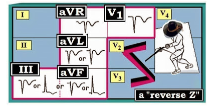
--
- LƯU Ý: Nội dung và các Hình #1 đến 4 và 6 đến 12 được trích từ ấn phẩm mới nhất của chúng tôi = “A 1st Book on ECGs-2014” và/hoặc từ phiên bản 1st Book ePub mở rộng (có trên kindle-kobo-nook-ibooks).

- -
- Nội dung nâng cao hơn và Hình #5 được trích từ ECG-2014-Pocket Brain và/hoặc từ phiên bản ECG-2014 ePub mở rộng (có trên kindle-kobo-nook-ibooks).

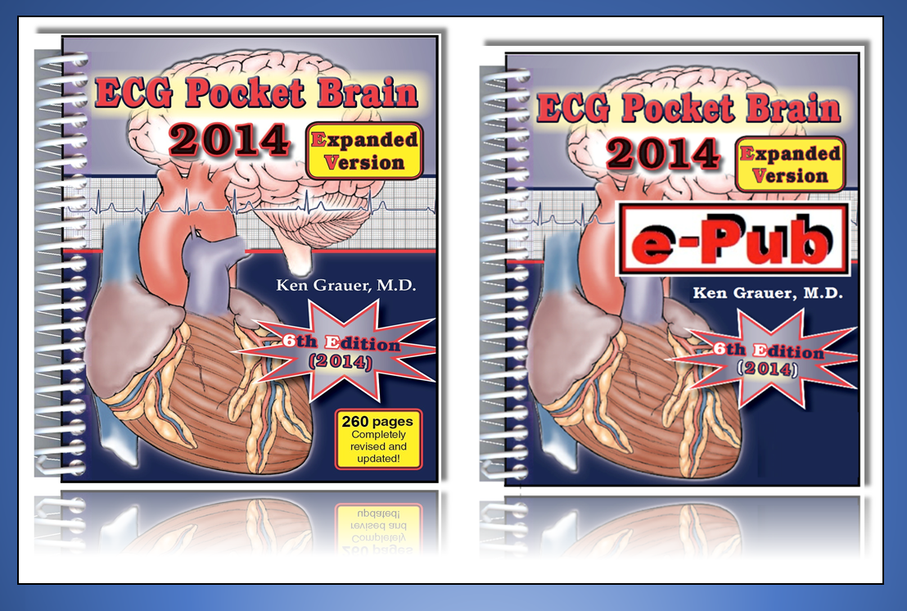
- -
- Mời tải miễn phí GLOSSARY (bảng thuật ngữ) mở rộng của chúng tôi về các thuật ngữ liên quan đến điện tâm đồ

- -
--------------------------------------------------------------